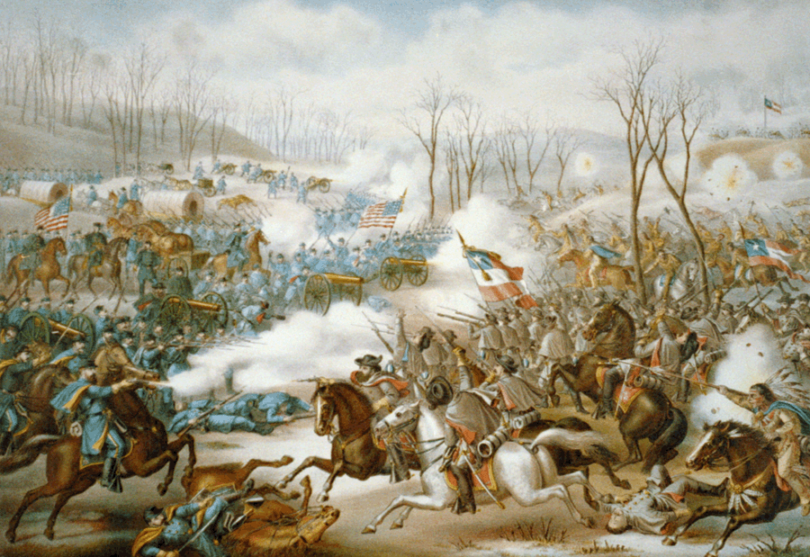

|
The battle of Pea Ridge, Arkansas was an important and
clear-cut Union victory in which the usual numbers disparity
was reversed--14,000 Confederates outnumbered the 11,250
Federals. Most importantly, the Northern victory secured the

Maj. Gen. Earl Van Dorn
|
Union's hold on the border state of Missouri.
Early in 1862, Union Major General Samuel R. Curtis,
commander of the Army of the Southwest, was charged with
driving the Confederate forces out of Missouri once and for
all. The 8,000 Missourians under the command of Confederate
Brigadier General Sterling Price left Missouri for a safer
position in northwestern Arkansas. There, Price combined his
units with those of Brigadier General Ben McColloch, just
south of Fayetteville, Arkansas. At Fayetteville, the
commander of the Trans-Mississippi District, Major General
Earl Van Dorn, joined Price and McCulloch. Van Dorn was now
in charge of the campaign. An aggressive general, Van Dorn
wished to recapture the ground that the Confederates lost in
their hasty retreat from Missouri. He planned a surprise
attack on the Federals, who had moved into Arkansas. In late
February, the ration-starved Rebels began their 55-mile
advance toward the Federal position in the middle of a
winter snowstorm.
Curtis heard of Van Dorn's forward movement from his
trusted scout "Wild Bill" Hickok. He immediately ordered his
infantry units to concentrate on a high ground near Pea
Ridge, Arkansas. Supported by artillery and cavalry, the
outnumbered Union forces established a superior defensive
position, and on March 6, there were a series of
inconclusive skirmishes between Northern and Southern
troops. Van Dorn, who was sick, directed the Confederate
battle plan from an ambulance behind the lines. His wanted
to destroy the enemy with a major movement against the left
rear of Curtis' army, centered by Elkhorn Tavern.
The battle began in earnest on the morning of March 7th;
General Price attacked the Union position and was twice
repulsed. The third time, he succeeded. At the other end of
the line from Price, a Cherokee Indian unit under the
|

The Battle of Pea Ridge was
one of the Union's first victories, and so remained
a popular subject in artwork for years, as in this
1890 lithograph.
|
command of Brigadier General Stand Watie took on a Union
division, but failed to achieve any meaningful gains. The
end of the first day of fighting brought a stalemate, as
neither side retired from the field.
The next day's battle secured the Union victory. Curtis,
confident that reports of the lack of Confederate ammunition
were true, ordered General Franz Sigel to attack Price's
Missourians. Supported effectively by Union artillery, the
Federals drove the Confederates from Pea Ridge. The Rebels
broke in confusion, and General Van Dorn ordered a retreat
to the Arkansas River. The causalities were high. The
Federals lost 1,384, and the Confederates anywhere from
800-1300, with 300 captured. Despite suffering greater
losses, the battle was a Union victory because it achieved
their desired objective. Missouri was secured for the Union
until a brief, and ultimately futile Confederate invasion
was mounted in fall of 1864.
Source: Joan Waugh, ed., Facts on File Encyclopedia of American
History: Civil War and Reconstruction, 1856 to 1869 (New York: Facts on
File, 2003), 265.
|